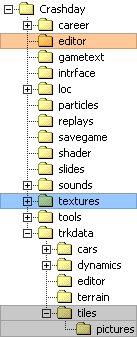

Tile
related files are spread over different folders
This is a short overview on the related files for custom track pieces.
|
trkdata\tiles |
|
|
[tilename].cfl |
track piece file holding general parameters and referencing to the related 3d model (see Tile specification file) |
|
[tilename].cai |
text file holding the AI info for the related track piece (see AI driver information) |
|
[tilename].cst |
text file holding the stunt info for the related track piece (see Track piece stunt definitions) |
|
[tilename].tga |
auto-generated image of track piece for use in track editor (see Track editor integration) |
|
textures |
|
|
Crashday shared textures |
Crashday offers a wide range of shared textures, feel free to use them for your custom track pieces |
|
Your custom textures |
add your own textures for custom track pieces here |
|
editor |
|
|
[tilename].p3d |
the 3d model of your track piece (see Modeling and texturing guidelines) |